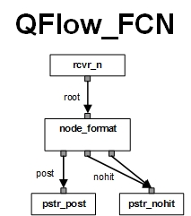

QFlow is a java application that hosts a single Message Flow. A generic JMS Message Flow contains three types of message nodes, ReceiverNode, PersisterNode and MessageNode. The ReceiverNode and PersisterNode are for message IO. The MessageNode is for message processing. A MessageFlow should have minimum two nodes, a ReceiverNode for picking up JMS Messages and a PersisterNode for delivering the messages. In general, a Message Flow can have multiple ReceiverNodes, MessageNodes and PersisterNodes. All the nodes should be linked to at least another node. With all nodes linked together, the MessageFlow will process the JMS Messages just like a production pipeline.
QFlow is a Java standalone application container running as a daemon with multiple deployed message flows. Each message flow is an application that consists of the interlinked message nodes, well designed for each of categories of message operations. Each node is running on a dedicated thread and communicates with the linked nodes via the internal queues. A ReceiverNode has the only one link as output. A PersisterNode has the only one link as input. A MessageNode has the only one input link and at least one output link. Any given link can be shared by multiple nodes. Those message nodes are the building blocks, just like Lego. Together, they constitute one MessageFlow. Each MessageFlow is a JMS application. QFlow is the container managing all the deployed message flows. It also provides monitor services, shared reports, and cluster support.
There are many popular Java application containers, such as Spring and J2EE. Why do we care of QFlow as a new Java application container? Well, the major difference is that there is no need to write your Java code in most of common scenarios if you use QFlow. Think about a similar case with Apache web server. It is well known that there are a lot of Apache modules available. In most of the cases, you just need to download the right modules for your needs and configure them for Apache container. Once tested, you will have a decent web server that meets all your needs. Similarly for QFlow, there are many modules avaiable in terms of MessageNode, MessageReceiver and MessagePersister. You just need to configure them to build a MessageFlow for your needs. Of course, there are many scenarios not covered by existing modules. This article is to help you write new modules.
If you are interested in having your application integrated with QFlow, you have at least three choices. The first one is to use JMS providers as the glue to tie your application and instances of QFlow. QFlow supports all JMS providers via the four standard JMS Message IO nodes, JMSReceiver, JMSPersister, JMSSubscriber and JMSPublisher. In fact, QFlow is also able to receive data from several non-JMS sources and/or to persist data to several of non-JMS destinations. That means your application does not have to be JMS friendly. This is very helpful especially when your application is not using Java. If this is the case, you may need to check QFlow Configuration for the features of existing nodes and for how to configure QFlow to fit your need.
The second choice is to have your Java class pluged in to one of the existing MessageNodes with plugin supports. In this case, your Java class will run inside the message nodes and process the messages. This is the easiest way to integrate your Java code with QFlow. Otherwise, the other choice is to simply implement one or all of the three interfaces, MessageReceiver, MessagePersister and MessageNode. So your application logic is built into the new message nodes that are already integrated with QFlow. This way, you can focus on your business logic without worrying other functionalities already available in QFlow. Besides, your new message nodes will be new features added to QFlow so that others can use them in their MessageFlows as blackboxes. This documentation is to help you write your own message node integrated with QFlow. Here is a MessageFlow diagram for JMX notifications.
In this flow, there are 1 MessageNode and 1 MessageReceiver.
If you are really interested in QFlow project and want to contribute your own message nodes to the project, you are very welcomed to join us. All the source codes for QFlow are checked in at dmtscm:/cvs under pses/java/broker. You are free to check out the source tree as a reference. You are also encouraged to implement any interfaces or extend any classes. Please feel free to copy any existing code with a new name and make your own changes. In case you want to commit any changes to the original source code, please let Yannan Lu or the owners of the code know first. Click javadoc to access API specifications for QFlow and other related classes.
A message-driven application usually is a piece of program running either standalone or inside some kind of containers, like an application server. It listens to a number of information sources, like JMS queues, to pick up messages. It then processes each of the messages and either consumes the messages or delivers them to their destinations. This fits well into the well-known design pattern of pipeline. You split your application into pieces based on the functionalities, tasks and the workflow. Each piece is modeled by a message node that only completes a simple task. When a message flows from one node to another, the tasks will be performed one after another. With all the nodes cascading together, you have a Message Flow, i.e. a pipeline.
Another important design principle for a message-driven application is asynchronism. The asynchronism of a message-driven application is mostly implemented by some queuing technologies. One of the reasons for the success of internet is because the packet switching technology was chosen in early 1970s. With the packet switching technology, the source is fully separated from the transport layers. Even though the data packets may get dropped or resent anywhere along the way to their destinations, this simplifies the transport layer and makes the technology extremely flexible and efficient. For a message-driven application, asynchronism will make it more flexible and more efficient.
Fault tolerance is also an important factor to consider in the designs of any message-driven applications. When an application is split into multiple components distributed across multiple threads, processes, CPU processors and even physical machines, the chance to have one failed component increases dramatically. You have to enhance the reliability and availability of each components to compensate the increase of the failure probabilities. The fault tolerance includes transaction controls, retries and failover, etc.
QFlow tries to model applications with Message Flows. Each Message Flow contains a number of message nodes. XQueue is used to glue the nodes together so that they can work coherencely inside the container. Even though the retry and transction control are implemented by each individual message node, QFlow will provides monitor services and cluster support so that the instances can failover. Therefore, it may not be a bad idea to have your application fully integrated with QFlow.
In case you really want to implement any of the public interfaces used by the QFlow, please try to make it more generic so that the code can be reused in other places.
QFlow is a Java container just like a standalone application server. It manages multiple message nodes and starts the thread for each of them. Therefore, the first-thing-first is to have the container to load the user defined message nodes and their configurations.
How does QFlow learn about the details of the message node you want? It is not a trivial job to have some Java applications to understand a common configuration file that represents or encapsulates generic hierarchical structures. It would be possible to use Java properties to represent an object. But this is only good for an object with a flat structure. To make this process easier, QFlow uses a special mapper, JSON2Map, to parse a JSON configuration file of a message node and creates an appropriate Java Map object. This Map object will be passed into the constructor of the desired message node class to instanciate the object.
In order to have applications to understand the content of the property Map, an one-to-one mapping rule has been defined and used. With the rule and the context, the application will be able to map the content back to its original desired structure. The mapping rule is very simple and straight forward. Here is an example: Agent.json.
There are 33 implementations on MessageNode. 7 of them support the customized plugins. They are ParserNode, FormatNode, JSONTNode, SelectNode, SwitchNode, ActionNone and AggregateNode. If you have complex messages to parse and there is no good support yet, you can try to plugin your own Java class into ParserNode. In case you want to transform the messages in your own way, you can plugin your Java class into FormatNode. JSON is often used for structural data, if you want to transform a JSON payload into various formats and there is no good support yet, you can try to plugin your own Java class into JSONTNode. If you want to use your own Java class to select content from the messages, you can consider to adjust your Java class as the plugin to SelectNode. If you want to have your own routing rule, you can try to plugin your Java class into SwitchNode. If you want to fully manipulate the message and also to generate a new message as a result, you should consider to plugin your class into ActionNode. After you read the javadocs, you will find it is easy to integrate your Java code with QFlow via plugins. In fact, this is the easist way to have your Java code running inside QFlow container and get all the benefits like monitor services and cluster support, etc. Moreover, it will not force you to implement any interfaces. If this is the case, you do not have to read the rest of the documentaion any more. Isn't that wonderful?
XQueue is the interface of an internal queue with transaction support. It is designed for communications between multiple threads. QFlow uses XQueue as the message channels between message nodes so that messages can flow along it in both directions. Currently, there is only one implementations of XQueue, IndexedXQueue. It is MT-Safe and supports transactions on message level.
In order to write your own message nodes, you have to get familiar with XQueue. Otherwise, your node will not be able to communicate with other nodes. However, you can have your own implementations of XQueue, too. Anyway, let us walk through the entire process of a message getting into and out of an XQueue. In this case, we take IndexedXQueue as the example.
IndexedXQueue implements XQueue with a number of indexed cells. Each cell has a unique ID with it. In order to add an object to the queue, you have to call reserve(int timeout) to reserve a cell. The method of reserve() returns the id of the reserved cell. The id is required when you add the object to the queue via calling either add(Object o, int id) or add(Object o, int id, XQCallbackWrapper callback). Once the object is added to the queue, it is available to other parts of the application. You can call cancel(int id) to cancel the reservation on the id-th cell if you are not going to use it anytime soon. The object added to the queue can be rolled back by calling takeback(int id) as long as it is not taken by others yet. In order to pick up the next available object from the queue, it is supposed to get the ID first via calling getNextCell(int timeout) in the way of FIFO. Once you have the ID, you can easily get the object by calling browse(int id). When you are done with the object, you have to call remove(int id) to commit the transcation. Or you can roll back the transaction by calling putback(int id). Please keep in mind that the object can be any Java object. Actually, we use XQueue to pass objects like JMS Messages, JMS Connections, JDBC Connections, ResultSets, List and Map, etc.
QFlow also uses XQueue to control the message nodes. XQueue has a property called GlobalMask. This property indicates the status of the XQueue and its transaction mode. Since the container usually owns all the XQueues, the GlobalMask is always used by the container to communicate with the threads or the nodes. Therefore, every node is supposed to monitor the GlobalMask of the linked XQueues.
MessageReceiver is an interface to receive or pick up messages from a data source. If the data source is a JMS Destination, the message will be passed to the output link directly. Otherwise, MessageReceiver is supposed to create a new JMS message to carry the data. The following two public methods are most important in the implementation of MessageReceiver:
public void receive(XQueue out, int sleeptime) public void close()
The method of receive() takes an XQueue object as the output link and an integer as the sleeptime between retries. The method of receive() is to receive or pick up messages from a specific data source and to put the messages to the given output link. The data source does not have to be a JMS destination. The message does not have to be JMS Message either, as long as the downstream node knows how to process it. It is up to the developers to decide whether and how to support transactions. When the transaction is supported, the implementation should allow the transaction to be enabled or disabled via the XQueue's XAMode.
This method should keep running as a daemon until the output link is marked as stopped or closed. It is supposed to check the status of the output XQueue periodically so that the container can control its pace and status. It should also catch and handle all exceptions and retries automatically according to predefined policies.
The method of close() is used to clean up resources at shutdown or reload. The developer is supposed to close all outstanding resources including the native resources in this method.
To make the implementation a bit easier, an abstract class, Receiver, has been added to implement MessageReceiver with only two abstract methods, receive() and close(). The former is the public method for receiving messages and the latter is the public method to close resources. Apart from those two methods for implemention, a constructor will need to be implemented to instanciate the receiver.
Here is an example: FileReceiver.java , The most important method to implement is receive(). Please pay attention to the part of reconnection and status control.
MessagePersister is an interface to persist or deliver messages to a data destination. It listens to a given XQueue for messages and tries to deliver them to a specific data destination. If the destination is a JMS Destination, the messages will be sent to the destination directly. Otherwise, the implementation is supposed to convert the JMS messages to the customized data and delivers them to the destination. The following two public methods are most important in the implementation of MessagePersister:
public void persist(XQueue in, int sleeptime) public void close()
The method of persist() takes an XQueue object as the input link and an integer as the sleeptime between retries. The method of persist() is to persist or deliver messages to a specific destination. The destination does not have to be a JMS destination. The message does not have to be JMS Message either, as long as the persister knows how to process it. It is up to the developers to decide whether and how to support transactions. When the transaction is supported, the implementation should allow the transaction to be enabled or disabled via the XQueue's XAMode.
This method should keep running as a daemon until the input XQueue is marked as stopped or closed. It is supposed to check the status of the input XQueue periodically so that the container can control its pace and status. It also should catch and handle all exceptions and retries automatically according to predefined policies.
The method of close() is used to clean up resources at shutdown or reload. The developer is supposed to close all outstanding resources including the native resources in this method.
To make the implementation a bit easier, an abstract class, Persister, has been added to implement MessagePersister with only two abstract methods, persist() and close(). The former is the public method for persisting messages and the latter is the public method to close resources. Apart from those two methods for implemention, a constructor will need to be implemented to instanciate the persister.
Here is an example: FilePersister.java , The most important method to implement is persist(). Please pay attention to the part of reconnection and status control.
MessageNode is an interface to process JMS Messages as a broker. The following four public methods are most important in the implementation of MessageNode:
public propagate(XQueue in, XQueue[] outs) throws javax.jms.JMSException public int getMetaData(int type, int id, long[] data) public void resetMetaData(XQueue in, XQueue[] outs) public void close()
The method of propagate() takes two arguments. The first one is an input XQueue from which the method gets messages. The second is an Array of XQueues as outlets for processed messages. The method of propagate() is to get messages from the input XQueue, to process them and to pass them to their output XQueues. With this method, you can focus on your application logic without worrying how to receive them from various data sources or deliver them to various data destinations. The separation of business logic from the vendor dependent transports makes the Message Flow much more reliable. You can actually replace, restart or switch the IO nodes without impacting on any of the business nodes.
This method should keep running as a daemon until either the input XQueue is marked as stopped or a JMSException is thrown. As the container, QFlow will catch the exceptions and evaluates them before taking any actions. In most cases, it just calls the method again. The node is supposed to check the status of the input XQueue periodically so that the container can control its pace and status.
The method of getMetaData() is to used to get stats from the message node. The method of resetMetaData() is to used for reload or checkpoint. The method of close() is used to clean up resources at shutdown or reload. The developer is supposed to close all outstanding resources including the native resources in this method.
There are 5 public methods for reloading rulesets dynamically. They are
public int addRule(Map ph); public int removeRule(String key); public int replaceRule(String key, Map ph); public int renameRule(String oldkey, String key); public int rotateRule(String key);There is no requirement on the MT-Safety. The container is supposed to pause the node before the reloading.
Implementation of MessageNode is the most challenge task in the design of a message-driven application. All the business logic and policies should be impemented in the method of propagate(). The implementation has to be reliable, dependable, flexible and extensible. Try to imagine that if a message node keeps hung, entire message flow is going to stop running as the result. Therefore please always fully test you node before using it in production.
To make the implementation a bit easier, an abstract class, Node, has been added to implement MessageNode with only two abstract methods, propagate() and initRuleset(). The former is the public method for message propagation and the latter is a protected method for initialization of a ruleset. It also has two protected methods, passthru() and feedback() for message delivery and feedback. Apart from those two methods for implemention, a constructor will need to be implemented to initialize the policies and rulesets.
Here is the source code of Node.java , and an example of its extension, SwitchNode.java . The most important method to implement is propagate(). Please also pay attention to the implemtation of initRuleset() and the constructor.